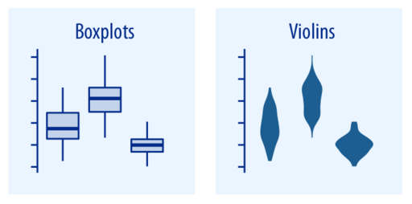
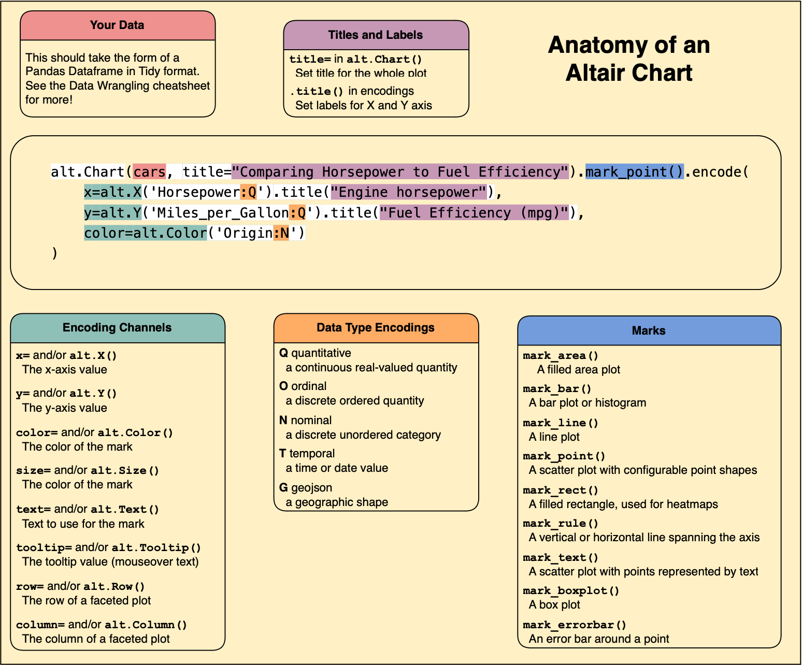
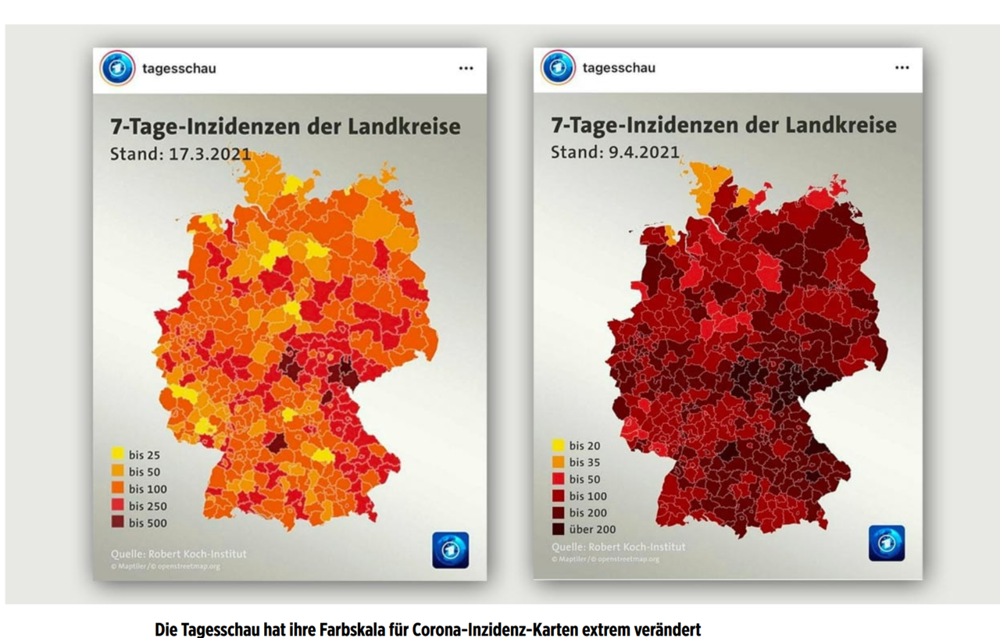

10 Visualizing Data
CIS 241, Dr. Ladd
11 Why Do We Visualize Data?

11.1 Visualization can be exploratory, explanatory, or both!
- Exploratory viz helps us (the researchers or analysts) understand the data.
- Explanatory viz helps others (the clients or audience) understand our analysis.
- Many visualizations do both of these things at once!
11.2 Some Good Resources on Visualization
- Claus Wilke’s Fundamentals of Data Visualzation (The illustrations in this slide show come from here!)
- The Altair User Guide
12 What Does Visualization Help Us to See?
12.1 Viz Can Help Us See Amounts.

- Variable types: 1 categorical and 1 numerical
- Common graph types: Bar plot (Don’t confuse the dot plot with the scatter plot!)
12.2 Plot Amounts With Multiple Categories.

- Variable types: 2 or more categorical, 1 numerical
- Common graph types: Grouped or stacked bar, heat map
12.3 Viz Can Help Us See Distributions.

- Variable type: 1 continuous (numerical)
- Common graph types: Histograms, Density plots, Q-Q plots
12.4 Distributions with Multiple Categories.

- Variable types: 1 continuous (numerical), 1 categorical
- Common graph types: Box plots, Violin plots
12.5 You Try It!
Look at the taxis data set. What visualization type would you use to compare the counts of each destination Borough? Which variables would you use, and what kind of variables are they? Jot down your answers.
12.6 Viz Can Help Us See Proportions.

- Variable types: 1 numerical, 1 categorical
- Common graph types: Pie chart, Bar plot
12.7 Viz Can Help Us See Relationships.

- Variable types: 2 continuous (numerical), (3 in a bubble chart)
- Common graph types: Scatter plot, Bubble Chart, Hex bins, Density contours
12.8 You Try It!
Look at the taxis data again. What visualization type would you use to compare the distribution of tips among different taxi colors? Which variables would you use, and what kind of variables are they? Jot down your answers.
12.9 Viz Helps Us See Time, Location, Uncertainty…

More on these viz types in future lessons!
13 Make Great Viz with Altair
13.1 Altair is declarative.
13.2 Importing Altair
import altair as alt
alt.data_transformers.enable("vegafusion")In addition to importing, use the VegaFusion Data Transformer for large datasets.

13.3 You Try It!
Use the Altair Cheatsheet to create a plot comparing the high temperature in Seattle to the wind speed using the seattle_weather DataFrame. Then create the same plot but show color as the type of weather.
from vega_datasets import data
seattle_weather = data.seattle_weather()If this is hard to read, you might also show the types of weather as separate columns.
13.4 You Try It!
Create a plot showing the distribution of precipitation in the seattle_weather dataset. Give the plot a title and labels for both axes. Then show the distributions according to each pickup borough, in different columns. Finally, change the size or number of the bins in each distribution to show more detail (narrower bars).
Hint: you may need to use the Altair User Guide as well as the cheatsheet to accomplish this!
14 Ugly, Bad, or Wrong


